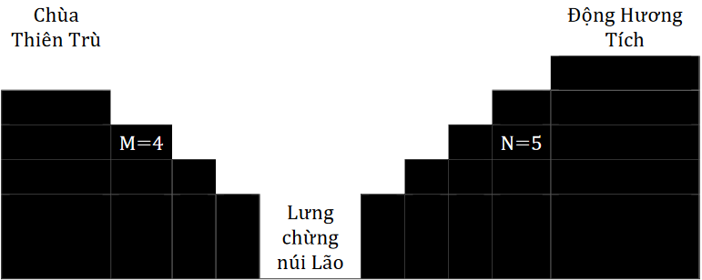

Chùa Hương là một quần thể di tích thuộc địa phân xã Hương Sơn, huyện Mỹ Đức, thành phố Hà Nội. Chùa Hương gồm nhiều chùa chiền (đáng chú ý nhất là chùa Thiên Trù) cùng với động Hương Tích rất nổi tiếng (được mệnh danh là Nam thiên đệ nhất động).

Vào mùa lễ hội (tháng Giêng đến tháng Ba âm lịch hàng năm), chú tiểu Bờm phải làm việc khá vất vả. Hàng ngày, Bờm phải từ chùa Thiên Trù đi xuống lưng chừng núi Lão rồi từ đó leo tiếp lên gần đỉnh núi để đến động Hương Tích. Sau đó, từ động Hương Tích, Bờm quay trở về chùa Thiên Trù theo đúng con đường ban đầu. Con đường bao gồm hai đoạn dãy bậc thang lát đá với số bậc lần lượt là M và N (xem hình minh họa). Hành trình của Bờm như sau:
Yêu cầu: Hãy tính xem có thể có bao nhiêu cách để Bờm thực hiện một chuyến đi-về trong một ngày như vậy.
Dữ liệu vào: Gồm nhiều dòng, mỗi dòng là một cặp giá trị của M và N (3 <= M, N <= 500).
Các số ghi trên cùng một dòng cách nhau ít nhất một kí tự trắng.
Kết quả: Gồm nhiều dòng, mỗi dòng là kết quả tìm được ứng với cặp giá trị của M, N thuộc dòng tương ứng trong file dữ liệu vào.